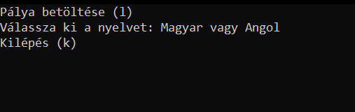
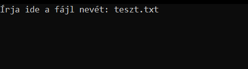

Útmutató
A kezdőképernyő után a játékos választhat nyelvet, vagy betölthet egy pályát.
A program alapvetően magyar nyelven indul!
A pálya betöltéséhez be kell írnia a fájl nevét.
FONTOS: a fájlnak a pálya mappájában kell lennie
A játék lényege hogy meg kell találni a szobákat és kijutni a labirintusból

A játkos a W(fel) A(balra) S(le) D(jobbra) betük lenyomásával tud mozogni.
A játék jelenlegi állását bármikor lehetőség van lementeni, amihez szükséges megadni a fájl nevét és kiterjesztését